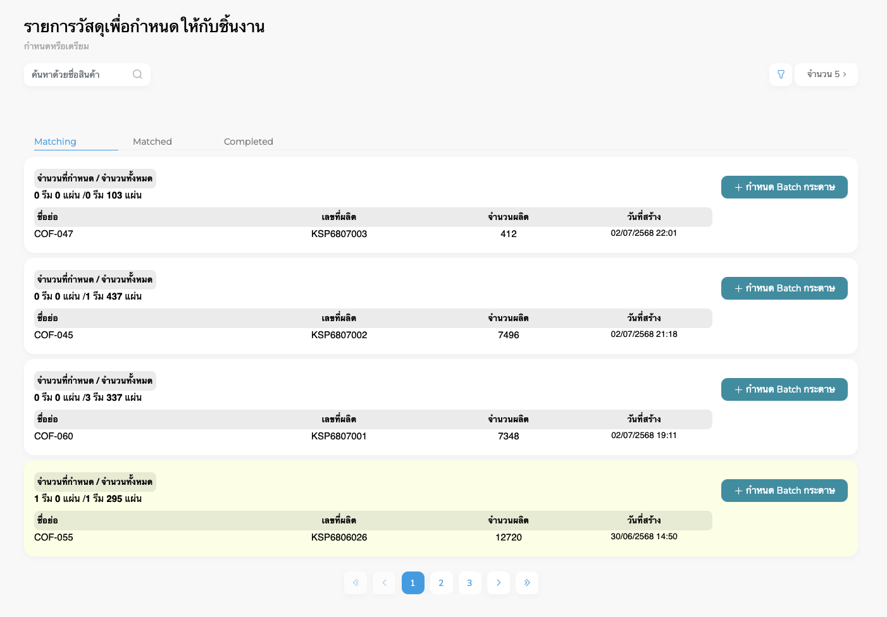
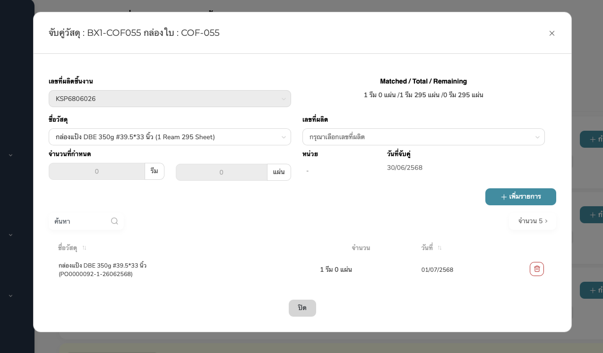
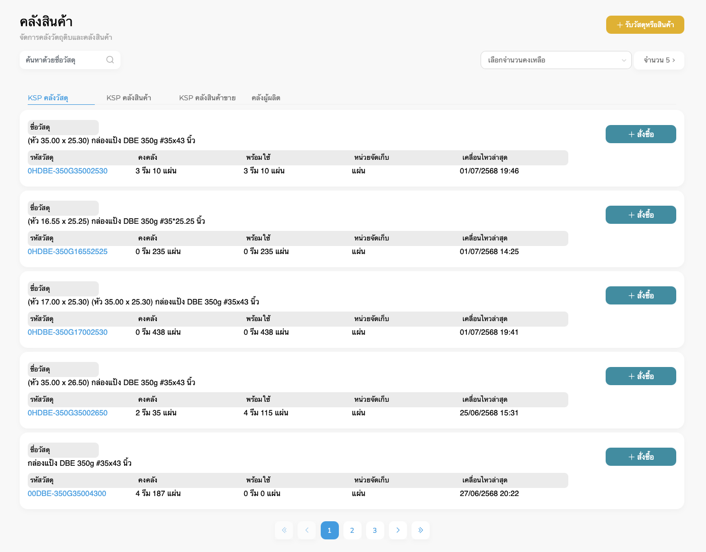
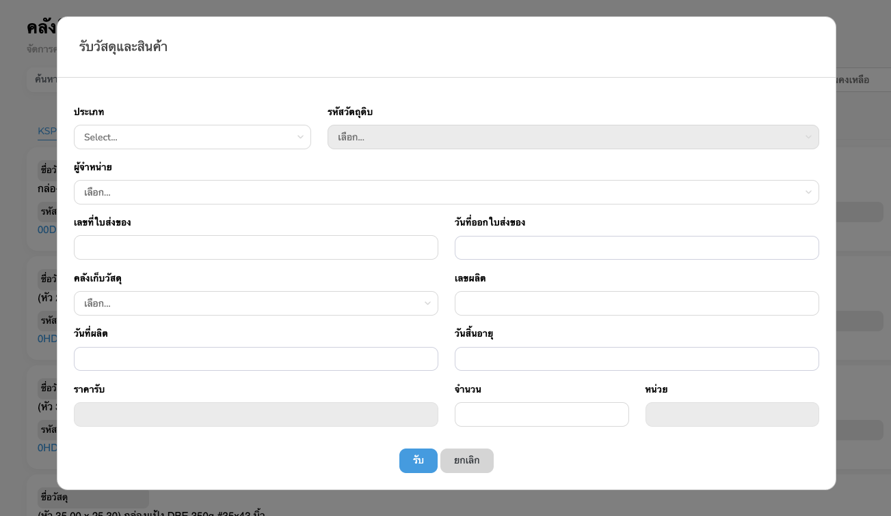
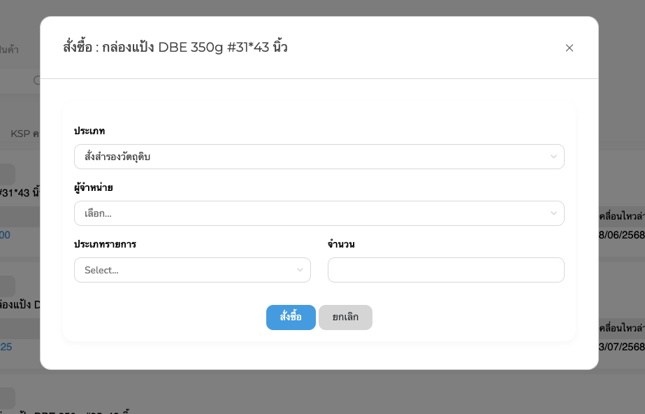

กำหนดวัสดุเพื่อผลิต
กำหนดหรือเตรียมรายการวัสดุเพื่อกำหนดให้กับชิ้นงาน

Figure 1: Material Matching page
ส่วนประกอบหลักของหน้า
- ค้นหาด้วยชื่อสินค้า: ช่องกรองรายการค้นหาด้วยชื่อของสินค้า
-
แท็บการแสดงผล: แบ่งรายการออกเป็น 3 แท็บ
- Matching – รายการที่ยังไม่กำหนด Batch
- Matched – รายการที่กำหนด Batch แล้ว
- Completed – รายการที่เสร็จสิ้นกระบวนการจับคู่
-
ปุ่ม + กำหนด Batch กระดาษ: ใช้เพื่อเข้าไปกำหนดว่า จะใช้ Batch
กระดาษใด สำหรับชิ้นงานนั้น โดยเมื่อคลิกแล้วจะมี modal ให้จับคู่วัสดุ
จับคู่วัสดุ
กำหนดหรือเตรียมรายการวัสดุเพื่อกำหนดให้กับชิ้นงาน

Figure 2: Matching Modal
การเพิ่มรายการจับคู่
-
เลือกเลขที่ผลิต (Batch)
- คลิก dropdown "กรุณาเลือกเลขที่ผลิต"
- เลือกจากรายการ Batch ที่พร้อมใช้งานด้านล่าง
-
ระบุจำนวนที่ต้องการจับคู่: กรอกจำนวนวัสดุที่ต้องการกำหนด เช่น 1 รีม
0 แผ่น
-
คลิก + เพิ่มรายการ: เพื่อบันทึกการจับคู่วัสดุ และหลังจากเพิ่มรายการ
ข้อมูลจะปรากฏด้านล่าง พร้อมแสดงวันที่และจำนวน
คลังสินค้า
จัดการคลังวัตถุดิบและคลังสินค้า

Figure 3: Inventory page

Figure 4: Material receiving page

Figure 5: Inventory purchase page
สรุปการเคลื่อนไหว
แสดงรายละเอียดการเคลื่อนไหวของคลังสินค้า